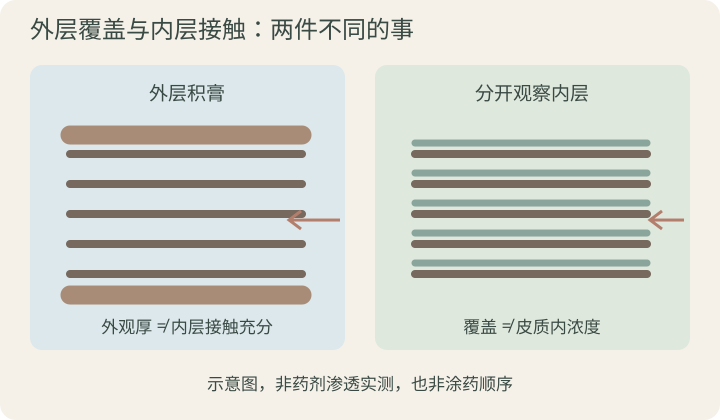
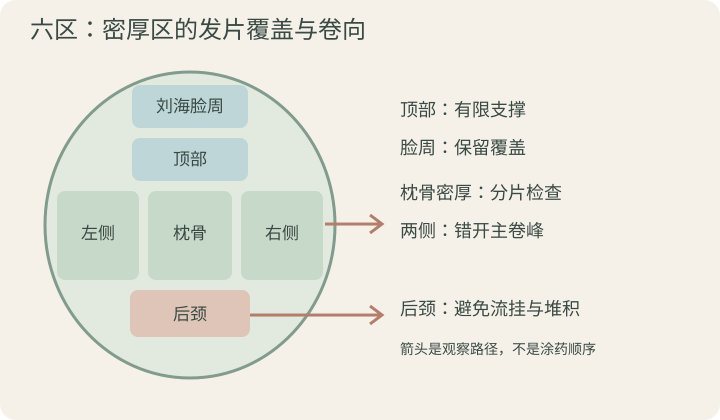
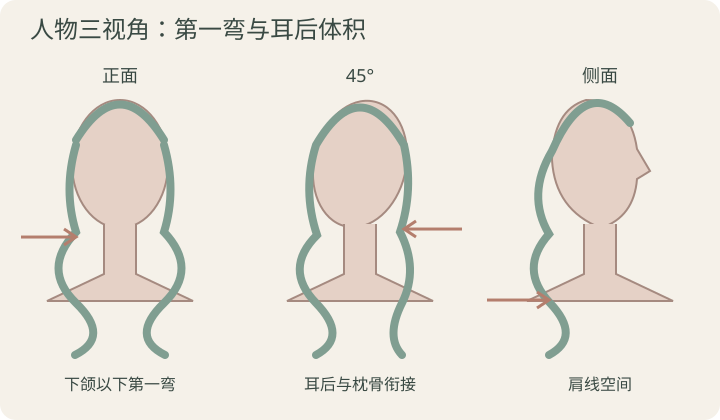

2026-11-28
【今日核心问题】同款药剂外层看着涂得很厚，是否证明密厚发片内层也均匀接触？不能。黏度描述流动阻力，润湿描述铺展，覆盖描述表面接触，扩散描述分子迁移，还原则是内部化学反应。霜状产品可控制流挂，却可能在厚发片外层形成积膏；液态也可能流向相邻区域而使局部覆盖不足。剂型不能直接换算药力。毛鳞片负责保护、摩擦与传质，皮质层角蛋白中间丝及相关蛋白承担主要力学作用，CMC参与细胞间传质。二硫键是较持久的共价交联，氢键随水分改变，盐键/离子和疏水作用维持结构。还原改变部分可接近二硫键，受有效成分、浓度、pH、扩散及时间影响；水分影响塑化、玻璃化及结构松弛，也可能改变表面流动；张力与卷绕约束曲线；热和时间影响材料、水分与反应，设备读数不等于发芯温度；干燥冷却改变暂时形态；配套氧化参与交联恢复。卷度、洗后保持和损伤分开评价。新生、旧染、旧烫、旧漂耐受不可同判。不要自行加水、增稠、混剂或用强张力补偿覆盖；湿态明显失弹、发黏、断丝或头皮刺激即停止相关处理。实验室玻璃化温度不是热烫设定。
近七日检索未发现直接隔离黏度变量的高质量真人研究。研究一（2026-02-28，原始离体毛束）：特定霜/凝胶复合流程在不同条件下卷曲效率、毛发保护表现有差异。中等证据：pH、配方、施加顺序同时改变，不能单独归因于黏度；不支持混配或照抄参数。研究二（1998-03-20，原始化学与毛束研究）：不同硫醇的分配与迁移特性和烫发效率相关，溶液反应速率不足以解释全部效果。中等证据：特定实验和企业研发背景；不支持直接推算商品剂型渗透或安全阈值。科研解释现象；厂家说明决定实际工艺；教材规范术语；门店经验需验证，不自动覆盖现行标准。
模拟教学案例：42岁，知性柔和，长方脸、颧骨中等、下颌略方、顶部微平、后枕较圆、长颈窄肩。自然干锁骨下约4厘米，中低层次。顶部细软中密、左耳前细软偏少、两侧发径中等且右耳后天然外C、枕骨粗硬密集、后颈密度中高根向偏左。整体微卷；新生约7厘米，中段氧化染两次及局部旧烫，尾端约2厘米旧漂再染；模拟湿态检查无显著失弹但旧漂需进一步评估。隔天洗，愿轻吹5分钟。参考图为吹整后的自然松S、颧骨不鼓、第一弯下颌以下、锁骨主S。顾客要求自然、不小卷、显脸小。最大风险：后枕厚发片表面积膏却内层接触不均，误判粗硬抗拒而补药，旧漂段再处理。八步：风格知性柔和；人物适配长方脸长颈；长度先安全有效发长；特点顶部轻C、侧后柔和；层次中低、耳前保量；刘海偏分弱C；卷度下颌以下第一弯、锁骨松S；打理自然干与5分钟轻吹。剪裁保留底线与适量侧后重量，枕骨仅连接。先核对厂家对发质及剂型的适用条件、TGA/半胱胺实际成分、配套氧化和设备；无型号不编造pH、药力、涂放顺序或时间。以厂家规定的发束测试、观察与停止条件为准，记录各区接触时刻和覆盖；不能凭表面厚度判断终点。冲水按说明，记录均匀湿润、局部滴水或偏干，非精确含水率。密厚区用适配发片宽厚、平铺尾纸、温和张力；起绕点和圈数按有效发长试排。加热、干燥、冷却、氧化依兼容完整工艺。目标正面柔和、45度耳后顺畅、侧面长颈保留适量重量；若局部卷松，先查覆盖记录、时间、层次、杠轴、干湿；不直接补药补热，旧漂不耐受则停止并改为单C或非化学造型。所有人物数字为模拟设定。
正面：长方脸不再过度拔高，顶部柔C，太阳穴保留覆盖，颧骨旁不过宽；第一弯下颌以下，最大卷峰近锁骨。45度：右耳后外C与后枕圆度错峰，避免两股弯叠加。侧面：长颈窄肩可以保留柔和侧后体积，不把后颈削空。背面：检查层次终点、主S和底线连续性。圆脸平顶可增加有限纵向支撑，短颈宽肩控制肩线堆积，低密度避免去量。设计不由剂型决定；局部药膏外观也不决定美感目标。
三张本轮原创静态SVG：原理图对照外层积膏与内层表面接触；技术图标记六区观察点；美感图标注正面、45度、侧面轮廓。均为教学示意，非实测渗透、真人效果或涂药顺序。



以下数字为公仔头无药无热试排候选，不是科研或厂家真人参数，提升角以局部头皮切线为0度。顶部30–34mm、15–30°顺根向轻C；枕骨32–36mm、10–25°顺后部方向轻微过度，分片查覆盖并错开卷峰；左侧32–36mm、10–25°向后轻微过度、保留耳前覆盖；右侧同类大杠、按天然外C调整杠轴和提升角，不机械镜像；后颈不卷或大杠、0–15°顺毛流留量，避免流挂与卷峰堆积；刘海脸周按有效长度、顺分缝弱C或不卷。各区平铺、温和张力，圈数记录实际值，不强拉凑圈。压根查落杠和夹具；炸根查根向提升；折痕查尾纸；尾翘查毛流与衣领；断层查相邻第一弯和层次；流向冲突查杠轴；后颈堆积查主峰与重量。化学覆盖不均不能通过几何强拉补救。
先问：过去哪些发段漂染烫？自然干还是愿轻吹5分钟？不要太卷是不要小卷还是只想一条C？显脸小希望修饰哪里？若旧漂不适合继续处理能否调整长度？模拟对话：顾客问‘你给我多涂点是不是会更卷？’发型师答‘药膏厚不等于接触均匀，尤其后枕密厚区；先核对产品说明和发质，分片检查，不盲目补药。’顾客问‘能像照片那么松吗？’答‘先确定第一弯和主S，参考图吹整过，自然干与轻吹会有差别；持久受发质和工艺影响。’可复制：我会先看各区发质和以往漂染烫历史，按产品要求确认覆盖与观察条件，再用八步确定轮廓、六区落实卷度。我们不靠加厚药膏或自行调配来保证卷度，旧漂不适合处理就调整设计。
先练：同一公仔头右后枕发片密，外层看着有厚膏；左侧较薄。是否可以直接认定右侧软化充分？是否应自行稀释膏体？是否应加强右侧张力？怎样判断松卷原因？参考答案：①不能，先分开观察各表面、核对接触记录与厂家规定测试，表面覆盖不是内部浓度。②不能，稀释改变配方、浓度、pH缓冲及稳定性。③不能，张力仅改变几何约束且可能造成损伤。④先区分化学历史、覆盖、接触时间、层次、起绕与干后整理；旧漂异常失弹立即停止。思路：覆盖—内部迁移—反应—曲线—轮廓，分别取证。
低风险离体实验：固定同款可冲洗无化学烫发用途的有色食品级水溶性凝胶、同批训练毛束，比较同一用量与同样刷涂次数的单侧涂布与两侧交替涂布。材料：8束同发长发径初始质量的离体训练毛束、软夹、电子秤、刷子、白底、常温水、计时器、手机。唯一主动变量是刷涂面分配；控制毛量、根端宽度、凝胶总量、起始湿态、刷具、次数、停留时间、环境与机位。A组4束两遍同侧，B组4束正反各一遍；随机分组并固定，记录两面可见覆盖，轻分开观察中间层；统一清水冲净，自然干后、24小时及两轮清水复湿后观察束感、残留与第一弯。空白表：样本｜组别｜用量｜正面覆盖｜反面覆盖｜内层可见覆盖｜24小时｜复湿1/2；A01–A04、B01–B04逐束填写，全部待测。实验未实施，无虚构结果；凝胶只模拟表面铺展，不能推断真实药剂扩散、还原或安全性。如果稳定差异，门店训练增加双面覆盖与发片内层观察记录，不修改实际产品工艺。
一个原理：剂型黏度、表面覆盖、内部迁移和还原不是同一个指标。一个错误：外层积膏就认定内部充分，或者局部卷松就自行稀释、补药。下次观察：统一凝胶用量与刷涂次数，在离体毛束上比较单侧及双面交替覆盖，记录内层可见覆盖、24小时及复湿结果。